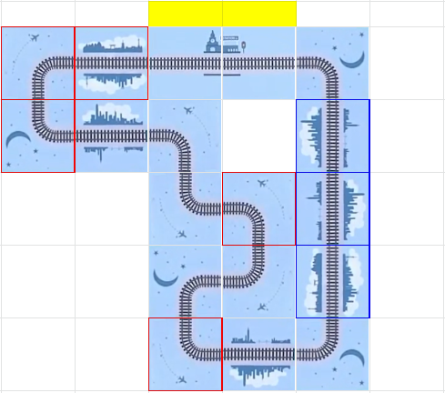

This puzzle comprises 8 mini-puzzles based on the Death Matches/Main Matches in the Korean reality television game show series “The Genius” (clued by the flavortext). Solving each mini-puzzle yields a 7-letter answer, and is akin to earning a “garnet”, which is a cubic in-game reward currency. A final mini-meta puzzle then uses the answers (garnets) from the 8 mini-puzzles.
The Death Matches/Main Matches referenced need to be identified from the series, and are mostly inspired by familiar logic or strategy games. Information about their rules are available on “The Genius” Wikipedia and Fandom pages, with detailed recaps on TV Tropes, as well as other standalone write-ups by various fans. The list of mini-puzzles are given in alphabetical order of the names of the Death Matches/Main Matches to aid identification.
This is a Main Match where the players had to pose yes/no questions to a group of 10 guests, with the goal being to obtain exactly 5 “yes” and 5 “no” answers. In this puzzle, the questions are provided, with the goal being to find the group of 10 uppercase letters which can provide 5 “yes” and 5 “no” answers to the given questions.
This puzzle can be approached in several ways. Solvers should first list down which of the 26 letters satisfy the given criteria. The question “Is it always a vowel?” should stand out, as only 5 letters satisfy this. Hence, all 5 vowels must be in the set of 10. The problem is now reduced to finding the set of 5 consonants.
Of the other sets, the “Is it the symbol of an element in groups 14 to 17?” is probably the most restrictive. The only letters which satisfy this are CFINOPS, of which 2 are vowels. Hence, 3 of the consonants out of CFNPS must be in the set. This limits the number of total set possibilities to (5 choose 3) x (16 choose 2) = 1200. This process can be repeated with other sets to narrow down the possibilities. Alternatively, all 1200 possibilities can be generated on a spreadsheet, and the number of “yes” answers calculated using formulas. See this example working.
An alternative approach to this minipuzzle is to observe that the problem can be reduced to a system of linear equations whose variables are 0 or 1, an Integer Linear Programming (ILP) problem. For example, one such equation for the horizontal line of symmetry would be HAxA + HBxB + …. + HZxZ = 5, where each HA represents whether that letter has a horizontal line of symmetry, 1 if it does and 0 if it doesnt, while each xA represents whether that letter is in the set or not. Also, xA + xB + …. + xZ = 10 to reflect that there are 10 items in the set in total. An ILP solver (or other computational methods) can then be used to solve this system of equations. For example, a relatively accessible and fast way to do this could be using the Solver add-in for Microsoft Excel.
Regardless of which approach is used, the set of letters which satisfy all criteria is A,C,E,I,L,O,P,S,U,X. Taking these in the order provided gives the mini-puzzle answer CUPOLAS.
In this Death Match, each player starts with 99 points and competes by bidding using their points across 9 rounds. In the first round, one designated player (in this case Player 1, hereafter referred to as A, and with Player 2 referred to as B) leads, subsequently, the winner of the previous round leads in the next round. Each bid is represented by either Black, meaning a single-digit bid from 0-9, or White, meaning a double-digit bid from 10-99. In addition, five lamps signal when each player’s remaining points fall below set amounts, for example, the first 80-99 lamp turns off when the player’s remaining points fall to 79 and below.
Solvers are given the full run of the game as well as several statements by both players, and must deduce how many points were played each round. The final extraction indicates to use 7 plays, where “A9” for example refers to the amount played by A in round 9. This can be deduced using the following steps:
In round 1, A played White and B responded with Black. Since all single digit values would lose, B, being rational, played 0. So B1 = 0.
Now consider round 2 and the information available to B thus far (A’s play of White in round 1 and Black in round 2). The first White play could range from 10-19 (if it were 20 and above, the 80-99 lamp would turn off), and the second play could range from 0-9. Since these possibilities are equally likely to B, a play with a 10% chance of winning must be 1. Hence, B2=1.
Consider round 3. Given that B lost in round 2, they now know that A played at least 2 in round 2, and at least 12 overall. After A’s round 3 White play, their total points are between 60-79, hence their range of possible values is 10-27. As B thinks their play has over 50% chance of winning, they must have played at least 20. So B3 >= 20.
Now consider A’s statement in round 4. A knows that B played 0 in round 1 and 1 in round 2, and some value 20 or above in round 3 for a total of 21 and above. Hence, B’s lead of Black in round 4 could be any value from 0-9 as the lamps did not change. Since a 40% chance of winning corresponds to a play of 4, this means that A currently has 64 left before the play. Instead, A plays the same value as in round 2 and loses, but this also causes the 60-79 lamp to turn off, meaning that the A2 and A4 are greater than 4.
Now we know that A1 + A2 + A3 = 35, A2 >= 5, and A1 + A2 < A3. This leads to a few possibilities:
In summary, A2 is from 5-7, A1 is from 10-12 and A3 from 18-20.
Consider round 5. B leads White and still has 60-79. A knows that B1=0, B2=1, B3>=20, and B4>=6. Hence the most that B could have played is 12. A hence plays 13 to guarantee the win, so A5 = 13. A’s subsequent statement indicates that A1 = 12, therefore, A2 = 5 and A3 = 18.
Consider B’s statement after round 5 that B5 = 2 * B4. The only possibility here is B4 = 6, B5 = 12. This also means that B3 = 20 since B’s total is still 60 and above. All plays thus far are now known.
Consider A’s lead in round 6. Since B can figure out all of A’s plays, B knows that A has 46 remaining (99-12-5-18-5-13=46) and could have played at most 6 to still keep the 40-59 lamp on. Therefore, B’s statement indicates that B6 = 7.
Consider B’s statement in round 7. There is only one power of 2 between 20-39: 32. Hence, B7 = 60-7-32 = 21. A responds Black which rationally is 0 so A7=0.
Finally, consider A’s statement in round 8, as this statement clues both rounds since both players will play all their remaining points in round 9. A knows that B has 32 remaining and has played White with 0-19 remaining, therefore the range of possible values is 13-32. In order to deduce how much A has left (let’s denote this value as T) and hence deduce the value of A6, one must take into account that there are 2 plays avaiable now that give a 50% chance of winning the entire game and 5% chance of a draw.
There are 20 possible values from 13-32, so that means that whatever A played would win for 10 of these values, and draw for 1. This means A8 must be greater than B8, and T-A8 must be greater than 32-B8 for 10 possible values of B8, and either A8=B8 or T-A8=32-B8 for one possible B8. This indicates there is “wiggle room” of exactly 10 for the value of a particular B8 to vary for A to still win both rounds, which is only possible if T is exactly 11 greater than 32, which is 43.
A quick inductive exercise can show that this is true. Say A had exactly 34 left. There would be exactly 1 way or 5% chance to win, which is for A8 to be 1 more than B8 (such that 34-A8 is also greater than 32-B8). If A had 35, there would be a 10% chance to win. Continuing with this line of induction, A would have a 50% chance of winning with 43 remaining. Hence A6 = 46-43 = 3.
With 43 remaining, a play of 23 or 33 would have a 50% chance of winning and 5% chance of draw. If A8=23, A would win if B played 13-22, and draw if B played 23. If A8=33, A would win if B played 23-32, and draw if B played 22. Note that playing between 24 and 32 would give A a 50% chance of winning and 10% chance of draw. Given that A still had 20-39 left after round 8, A8=23 and A9=20.
There is insufficient information to determine B8 and B9 accurately. However, since they are not required for extraction, their values are not important.
Take the given values and convert them using A=1,Z=26, giving the mini-puzzle answer TACTFUL.
| A9 | B2 | A6 | B3 | B4 | B7 | B5 |
| 20 (T) | 1 (A) | 3 (C) | 20 (T) | 6 (F) | 21 (U) | 12 (L) |
This Death Match is a Set game variant, with only 9 cards shown each round in a 3x3 layout, and players taking turns to call out “Hap!” to identify a unique set (which is not removed and replenished). The round ends when a player calls out “Gyul!” instead, to indicate all possible sets have been identified, and a fresh set of 9 cards for a new round is then started.
The puzzle presents 14 games, which can be solved to find the number of Haps, as clued by the mini-puzzle’s flavour text. These 14 games each exist on a larger square that has a sun, moon, or star image as the background, that match the symbols on 7 larger cards that are presented in order.
| 1 | 2 | 3 |
| 4 | 5 | 6 |
| 7 | 8 | 9 |
For cards numbered as above, the following table shows the Haps that can be found for each game:
| 0 | 0 | 1 158 |
2 389 578 |
| 3 149 158 345 |
3 168 357 469 |
4 169 357 467 568 |
5 135 146 189 349 568 |
| 6 123 147 246 258 349 679 |
6 126 134 157 235 467 789 |
6 146 249 257 345 378 589 |
8 123 145 246 567 347 168 278 358 |
| 8 123 145 178 246 257 348 367 568 |
12 123 145 168 179 246 259 278 347 358 369 489 567 |
The 14 games can be matched with the 7 cards by matching backgrounds, and then the sum of the two games give a letter using A=1 ... Z=26 to give the answer PICLEAR.
This Death Match is a game of Blind Man’s Bluff and each player’s card is combined with the two community cards to form a three-card hand. The game uses a deck of 40 cards, comprising 4 sets of cards numbered 1-10. So it can be deduced that the 7 unknown cards are the numbers 2, 3, 4, 5, 6, 8 and 9. The goal is to solve (by process of logical elimination) for each deal, which of these cards (when combined with the 2 community cards) could result in a winning 3-card hand, as summarized in the table below. The sum value of the winning hands converted to letters gives the answer to this mini-puzzle SUPPORT.
| Deal | Possible winning card/s | Deduced card | Community cards | Sum value of winning hand | Convert to letter |
|---|---|---|---|---|---|
| 4 | 4, 9, 8, 6, 5 (1, 7, 10) | 4 | 7, 8 | 19 | S |
| 5 | 8, 6, 5 (7, 10) | 8 | 6, 7 | 21 | U |
| 6 | 3, 4, 9, 8, 6, 5 (1, 7, 10) | 3 | 3, 10 | 16 | P |
| 7 | 2, 3, 4, 9, 8, 6, 5 (7, 10) | 2 | 6, 8 | 16 | P |
| 8 | 5 (10) | 5 | 5, 5 | 15 | O |
| 9 | 6, 5 (7, 10) | 6 | 5, 7 | 18 | R |
| 10 | 9, 8, 6, 5 (1, 7, 10) | 9 | 1, 10 | 20 | T |
This Death Match is a game of Venice Connection. The goal is to solve for the next winning move in the 8 given positions, based on this game’s (Nim-like) rules that players can alternatingly place 1-3 connected tiles in a row each turn, and the player who places the last valid tile to complete the path wins. All these given positions require all the 16 available tiles to form a complete loop, so the paths are unique. The positions are split into two columns/sets of 4, color-coded by yellow and orange above the starting 2 station tiles. The full paths and next winning moves for each position are summarized in the table below:
| Pos | Full Path for Yellow | Full Path for Orange |
|---|---|---|
| 1 | ||
| 2 | ||
| 3 | |
|
| 4 |  |
Below are the explanations for the unique next winning moves in blue above:
For position Yellow-2:
The four remaining tiles in red in the path are all separated. So the opposing player must next place
one and our player can place other, and so on one more time to win.
Making any other move loses as it allows the opposing player to make a move and leave a similar state with four single separate tiles instead.
For positions Yellow-4 and Orange-4:
The remaining tiles in red in the path are 3 tiles forming an L-shape, and a pair of separated single tiles.
The corner of the L-shaped grouping is not connected to another tile, so the opposing player cannot place only
that corner. If the opposing player places in this L-shaped grouping, our player can place the remaining tile/s
there, leaving two separated single tiles for a win (and vice versa if the opposing player places a single tile first).
Making any other move in the 4-tile grouping loses as it allows the opposing player to make a move and leave a similar state instead. Placing two tiles in the L-shape grouping loses as the opposing player can make a move and leave four single separate tiles. Placing one tile in the L-shape grouping allows the opposing player to make a move and leave heaps of 3,2,1 which is also a loss state.
For all the other positions:
The two remaining tiles in red in the path are separated. So the opposing player must next place either one and our
player can place the other to win.
Making any other move loses as it allows the opposing player to make a move and leave a similar state with two single separate tiles instead.
The positions of the 2 starting station tiles are lined up in each column for the yellow and orange sets. If the 4 positions in each set are overlaid with the stations aligned, the tiles used in the next winning moves do not overlap and forms the following tracing of the letters for CALORIE, the answer to this mini-puzzle.
In this Main Match, players must complete 3 rounds of Open, Pass, hitting a target number of points each round. At the beginning of each round, players are given a deck of 30 cards, from which they must choose 20 to play with. Cards either have numbers (1-10) or arithmetic operators (+/X), and have either a red, blue, or black back.
After the player selects their deck, it is shuffled and laid out, face down. One by one, the player chooses to “open” or “pass” a card. “Opening” a card flips it over and adds it to a 10-card mathematical equation, starting from the end. Players continue “opening” and “passing” cards until all 10 cards are in the equation. The equation is then evaluated, using standard order-of-operations rules. If multiple numbers or operators are placed side by side, only the leftmost number or operator is counted and the others are discarded. Additionally, if the sequence begins with an operator, a 0 card is placed at the start of the operator, and if the sequence ends with an operator, that operator is discarded. For example, if the first card is X (multiplication), the equation would begin 0 times… and thus score low.
Players can use logic and the card back colors to choose an optimal deck and provide themselves with information during the game. For instance, only choosing red cards with high numerical values allows the player to hold off until a red card to play for a high score.
Additionally, during Round 3 players have the option of flipping the card upside down. This tactic allows players to discern multiplication signs from other blue or black cards, making the round significantly easier.
Upon completing Round 3, players are given the answer ROADMAP.
In this Death Match, each player chooses a secret 4-digit number which the other player has to guess by taking turns to ask questions. Player has to answer every question with a lie, otherwise the alarm sounds and the player has to reveal a digit not in their number, which happened in two of the turns. So the other given answers have to be interpreted as lies in order to figure out each player’s number from the questions. The solving steps for each player’s number is independent and can be inferred separately based on their responses, as follows:
Inferences based on inverted responses for PLAYER1 by clue:
| First Digit | Second Digit | Third Digit | Last Digit | Iterations to 6174 |
|---|---|---|---|---|
| 0 | 3 | 1 | 1 | 5 |
| 0 | 5 | 0 | 0 | 5 |
| 0 | 3 | 2 | 0 | 4 |
| 1 | 2 | 1 | 1 | 4 |
| 0 | 4 | 1 | 0 | 6 |
| 0 | 2 | 2 | 1 | 2 |
| First Digit | Second Digit | Third Digit | Last Digit | Sum of Digits |
|---|---|---|---|---|
| 3 | 6 | 5 | 2 | 16 |
| 5 | 6 | 6 | 1 | 18 |
| 2 | 9 | 5 | 2 | 18 |
The instruction mentioned “getting the answers out of these players”, and one of the responses hints that the digit 0 is not important. So the digits of the numbers (ignoring the 0) can be used as indices to extract letters from PLAYER1/PLAYER2 to give the 7-letter answer to this mini-puzzle APPAREL.
This Death Match is similar to Dōbutsu Shōgi, with the difference that pieces may not para-drop onto the last rank. The goal is to solve for a forced mate in 4 by Player 1 (moving first), and with Player 2 playing perfectly to delay the mate as long as possible
In the following game notations, rows are numbered a-c from top to bottom, and the columns are numbered 1-4 from left to right. Cross symbol indicates capture, asterisk symbol indicates para-drop, and plus symbol indicates check.
To solve this mating sequence, one useful strategy is to first think of the final mating position required. As a General delivers mate, the last move by Player 1 must place a General adjacent to the Player 2 King, with the King having no other escape squares it can move to. The most straightforward way for this is to have the King at a4 and the General at a3, with another General at b3 guarding the King’s only escape square at b4, and also protecting the General at a3. It can be deduced that other possible final mating positions would require either too many moves, or imperfect play by Player 2. Note however, that Player 2 can defend against this mate on a3 by placing a Minister at a3 or b4. So the General needs to be first placed at a2, so that the Man can be dropped at a3 first to exchange off the defending Minister. Hence the latter three moves are somewhat determined, and the first move must be to drop the General b3. There is slight variation possible in how Player 2 drops/moves the Minister, as long as the Minister is able to delay the mate till move 4 by either capturing the Man on a3 or checking the King on c1.
The correct 4-move mating sequence (including its variation lines) are:
| 1. | General* b3 | Minister* b4 |
| 2. | General* a2 | Man c3 |
| 3. | Man* a3+ | Minister xa3 |
| 4. | General xa3 mate |
or
| 1. | General* b3 | Minister* a3 |
| 2. | General* a2 | Minister b4 |
| 3. | Man* a3+ | Minister xa3 |
| 4. | General xa3 mate |
or
| 1. | General* b3 | Minister* a3 |
| 2 | General* a2 | Minister b2+ |
| 3. | King xb2 | Man c3 |
| 4. | General a3 mate |
When the correct sequence is played in the simulator, the answer for this mini-puzzle OUTHALF will be provided.
The following are some other incorrect sequences (deviation points from main sequence in red):
| 1. | Man* a3+ | King xa3 |
| 2. | General* b3+ | King a2 |
| 3. | General* b1 |
(Forced to stop King a1, no mate in 4)
| 1. | General* b3 | Minister* b2+ |
| 2. | King* b2 | Man c3 |
| 3. | General* a3 mate |
(Player 2 did not defend optimally)
| 1. | General* b3 | Minister* b4 |
| 2. | General xb4+ | King xb4 |
| 3. | General* b3+ | King a4 |
| 4. | Man* a3 mate |
(Not mate using General)
| 1. | General* b3 | Minister* b4 |
| 2. | Man* a2 | Man c3 |
| 3. | General* a3+ | Minister xa3 |
| 4. | Man xa3 mate |
(Not mate using General)
As indicated in the instructions, this is a brand new Death Match, so solvers will need to first figure out the rules and how to use the 8 answers (garnets) from the mini-puzzles. Note that all the 8 answers from the preceding The Genius mini-puzzles are 7-letter words.
A modified image of the actual in-game garnet (a reward currency) is given with this mini-meta, which shows the cubic garnet has a letter G (the logo for The Genius) traced around its edges, and with an arrowhead added indicating a direction. The path covers 7 corners of the garnet (with the 8th being hidden out of view). So using this path, it is possible to map each letter of the 7-letter answers onto the corners of its garnet, with the last corner being an unknown letter, as shown in the letter/corner ordering based on the path in the garnet image below:
The Death Match name clues that solvers need to stack up the 8 cubic garnets into a tower. As given in the flavortext, in the stacked garnet tower, letters (including the unknown one) on adjacent faces of each level should match. Since the garnets have letters mapped to each corner, the garnets should be oriented such that garnets in the tower have matching letters on all adjacent corners. This serves as the rule and constraint for arranging the 8 garnets in order and their relative orientation. As a hint and entry-point, the garnet that forms the base of the tower maps to the answer SUPPORT. The order and orientation of the 8 answers on the garnets are shown below (entire tower can rotate about the vertical axis without impacting the extraction):
Each pair of touching faces/corners includes 1 unknown letter, which is thus identified by the known letter on the corner it touches. The 7 unknown letters identified in this manner, read in order from the base, spells the thematic puzzle answer OTHELLO, which is another strategy game.